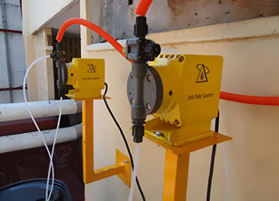
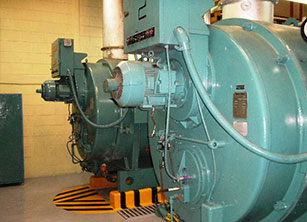
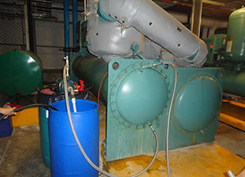

Productos

Productos
- Inhibidores de incrustación y corrosión para torres de enfriamiento, chiller y calderas.
- Dispersantes de fierro
- Secuestrantes de dureza
- Biocidas oxidantes y no oxidantes
- Antiespumantes
- Dispersantes de incrustación, entre otros

Productos y Equipos
- Programas de Tratamiento Químico para Sistemas de Enfriamiento
- Generación de Vapor
- Circuitos Cerrados de agua Helada y Caliente
- Diseño, Venta, Fabricaciócn, Instalación y Puesta en servicio de Sistemas de Tratamiento de Agua y Plantas de Aguas Residuales
- Servicio, Mantenimiento, Optimización. Pólizas de Servicio y Apoyo Técnico para Instalación y reparación de Torres de Enfriamiento (Nuestra filial Crossflow México)
- Servicio de limpiezas químicas en Calderas e Intercambiadores de calor
- Cursos de Capacitación Teórico Prácticos para Operadores y Supervisores de Sistemas de Tratamiento de Aguas para Calderas, Chillers y Torres de Enfriamiento

Equipos para Tratamientos de Agua
- Sistemas de Filtración mediante camas múltiples
- Sistemas de Filtración mediante Carbón Activado
- Sistemas de Desmineralización mediante Resinas de Intercambio Iónico
- Sistemas de Desmineralización mediante Osmosis Inversa
- Dosificadores de químicos
- Instrumentos en línea como son pHmetros, Conductimetros, medidores de Dureza, Medidores de Cloro Residual, Indicadores de Presión, Rotámetros
"Nuestro objetivo es brindarle asesoramiento necesario y adecuado, ofreciendo proyectos y estudios de ingenieria con soluciones confiables, económicas y eficientes.
Delta Water Quemical México